每个孩子都有一个爱吹牛的爸爸。
威尔的爸爸爱德华则走的更远，他总是用很夸张的方式讲着自己过去光怪陆离的传奇经历。
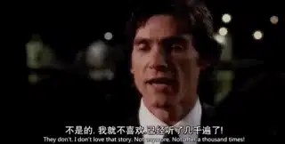
在爱德华讲的“真实”故事里。
他的出生就非同寻常，他是像火箭一样从妈妈的肚子里发射出来的。
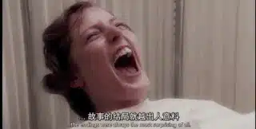
爱德华小时候还遇到一个吉普赛女巫，他从她的玻璃眼睛里早早就看到了自己将来死亡的场景。
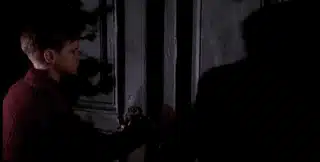
更加离奇的是，当爱德华和家人在教堂齐唱《奇异恩典》的时候。
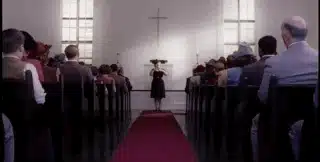
他的身体忽然开始快速发育，因为骨骼和肌肉跟不上发育的速度，他在床上躺了整整三年。
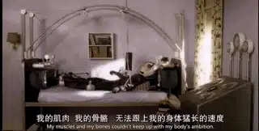
躺在床上的爱德华从书里终于自己的身体为什么会如此快速地发育。
原来自己可能是一条金鱼。
因为金鱼放在小碗里，它会变小，地方大了，金鱼会两倍三倍的长大。
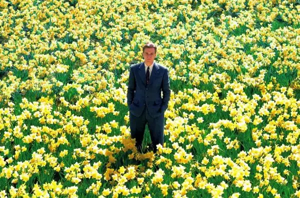
在父亲讲述的故事里，他长大后的经历更加传奇。
和巨人结伴冒险、勇闯幽灵镇、在马戏团偶遇自己的缪斯女神、看见冻着长毛象的冰川..........
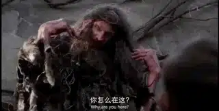
这些童话般的故事，爸爸逢人就讲，每个人都很喜欢他的故事。
可是威尔受够了，因为这样的故事他已经听了几千次，没等爸爸讲，他就知道爸爸接下来会讲什么。
而最让威尔难以接受的是，爸爸竟然说这都是真实的。
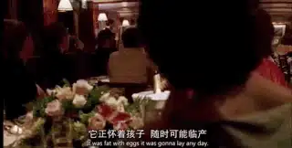
在威尔的新婚之夜上，爸爸仍然喋喋不休地讲着这些故事。
忍无可忍的威尔和爸爸吵了一架，自那以后的三年里，父子俩再没有说过话，他们成为了互不了解的陌生人。
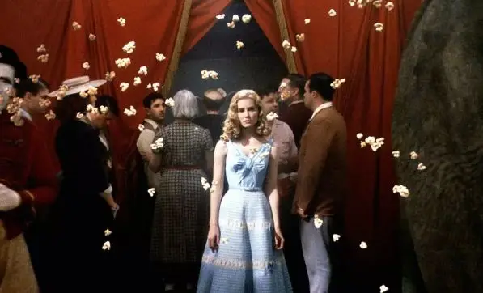
直到一天，威尔得知爸爸病危。
这次回家之旅让威尔对爸爸以及他的故事产生了不一样的看法........
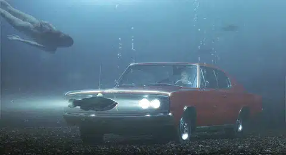
这部作品是好莱坞怪客蒂姆.伯顿的《大鱼》，在豆瓣前250的电影中排第91位，评分高达8.7。
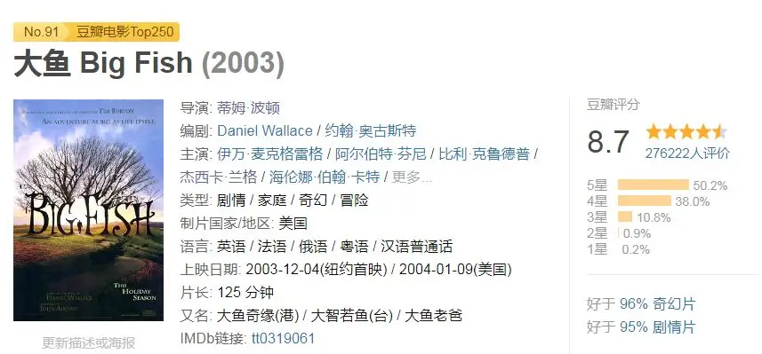
蒂姆.伯顿小的时候因为父母的过分“关爱”，他总是一个人被关在小屋里。
年仅7岁的蒂姆·波顿发出“日常生活中的现实——父母、老师、学校——远比怪物或电影可怕得多”的感慨。
封闭孤独的蒂姆.伯顿只能沉浸在自己的世界里，他喜爱恐怖片和童话，对绘画有着极高的想象和天赋。
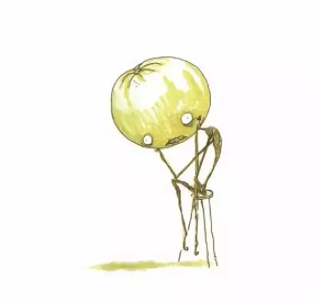
成年后，他因动画短片《文森特》被人瞩目。
之后陆续创作了《蝙蝠侠》、《剪刀手爱德华》、《爱丽丝梦游仙境》、《理发师陶德》等一系列经典作品。
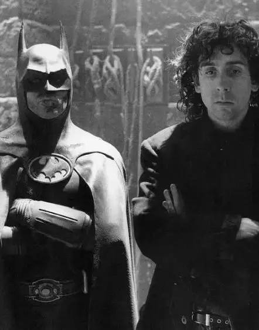
在这些创作中，暗黑、哥特、充满奇思怪想又感人至深的个人风格逐渐成熟，他和密友约翰尼·德普、伴侣海伦娜·博纳姆·卡特之间的长期合作更成为影坛佳话。
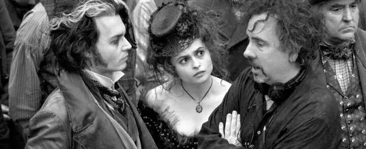
对于自己的父母，蒂姆.伯顿却始终拒绝公开谈论。
2001年，蒂姆.伯顿的父母接连去世。
两年后，《大鱼》诞生，这位鬼才导演以自己最独特、最真挚的方式和父亲进行了和解。
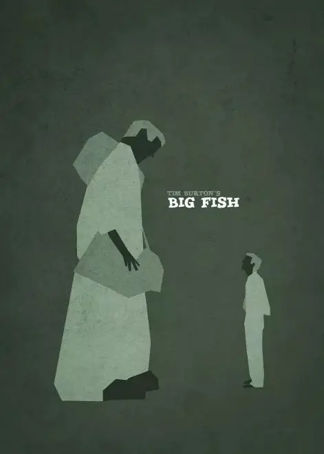
关于爱德华所讲的故事，我们很难把事实和虚幻分开。
但是正如电影刚开始的旁白所说，我们也许就没有必要分的那么清楚：
故事不一定合理，或者大多数没有发生过，但是这种故事就是这样的。
这就是蒂姆.伯顿讲故事的特别之处，他并不会完全设立一个异世界来讲故事，而是将怪诞、童话和现实的世界并立，甚至穿插其中。
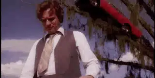
比如说，剪刀手爱德华这样童话般的人物偏偏出现在满是人情世故的人类小镇，他的哥特城堡也离小镇不远。
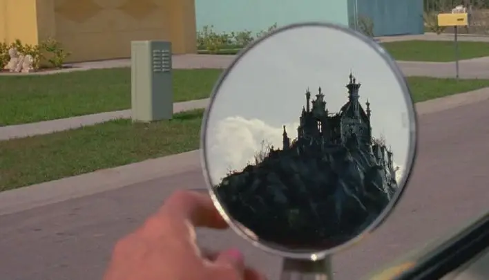
本片更是如此，所有的人物和地方都有相对应的现实原型。
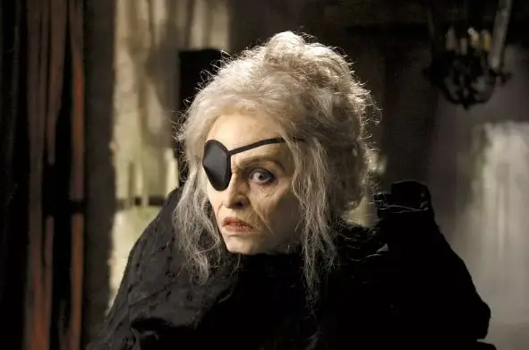
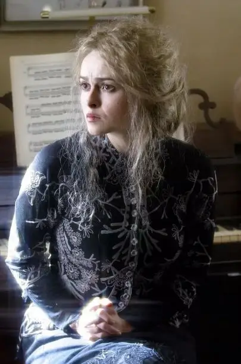
蒂姆就是要在这个冰冷麻木的世界中呈现童话。
并且通过世俗对这些美好童话人物的伤害，来让我们这些满嘴油腻、缺乏想象力的成年人恢复点知觉。
当我们看到剪刀手爱德华被小镇的人伤害，本片中的父亲躺在病床上奄奄一息的时候，我们才意识到奇迹正在与我们擦肩而过，而我们此前从来都没有珍惜过。
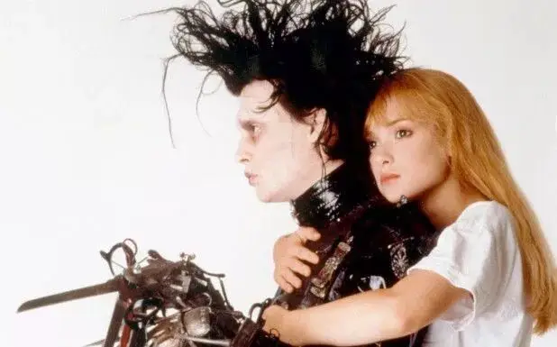
甚至，我们从来都不懂他们
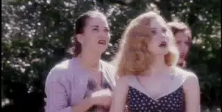
当威尔因为父亲病重而开始用心去对待父亲和他的故事时，他才发现，这一切原来都是真的。
爸爸所提到的地方和人物都是真实存在的，而这些故事之上的魔幻和夸张恰恰是因为爸爸对这个世界始终抱以童话般的赤诚和激情。
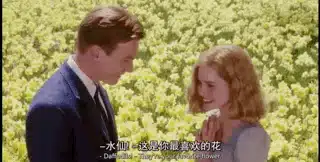
威尔可以说时间静止是假的，但是爸爸爱上妈妈的那一刻时间就是静止的；
威尔可以说女巫是不存在的，但是爸爸对死亡的思考是真的；
威尔可以说大海里的人鱼是假的，但是爸爸的对自由的想象和渴望是真的。
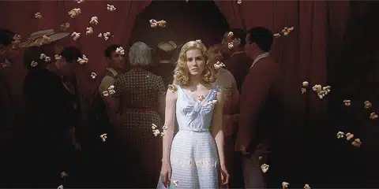
威尔理解了爸爸，在爸爸生命的尽头，他和爸爸一起完成了最后一个故事：
爸爸从病床上起来，他想要回到大海的怀抱中，威尔这次站到了爸爸这一边，他协助爸爸闯出医院，他们驾车飞奔。
父子倆终于来到海边，马戏团、爱人、双胞胎、巨人等在故事中出现的朋友早已在那里等着和爱德华告别。
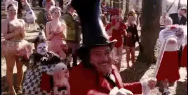
告别后，威尔将爸爸慢慢放入水中，当爸爸沉入大海的时候,他变成了一条大鱼....
就这样，威尔对爸爸的祝福以及爸爸对世界的爱就永远留在了这个美好的童话中。
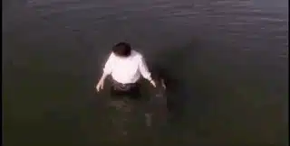
而童话是超越现实的更大真实，里面浸透了人类最真实的渴望和情感。
在父爱中也是如此。
不论现实多么昏暗，不论一个父亲对这个世界多么失望。
在他们内心深处都有着这样的盼望和信念：自己的女儿将要像童话故事中一样遇到自己的白马王子，儿子也会像童话中那样勇敢真诚。
即使是在父亲带着虚荣的吹牛中，其背后也有着童话的影子：爸爸想要成为孩子心中无所不能的英雄。
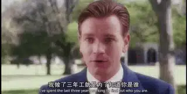
也许，我们听厌了爸爸酒醉后的夸夸其谈，但是总有一天，我们会忽然发现，那些一而再再而三的话像是全新的一样。
在那个时刻，我们会在这些不断重复的话里看到爸爸最深的爱、盼望以及心酸。
在这个不尽如人意的世界里，他想要给你一切；在这个到处都有眼泪的地方，他希望你永远快乐。
这就是父爱！
而怀着爱心安静地听父亲吹牛也是对他的一种爱和尊敬。
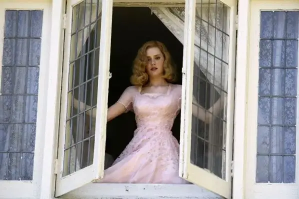
而童话般的渴望背后藏着的是人类对永恒的深深盼望，这是一种隐秘于每个人心中的集体无意识。
这种无意识让我们出生就喜欢童话。
当我们长大后，虽然现实和冰冷会压抑这种渴望，但不管承认不承认，我们虽然说着、唱着“童话里的故事都是骗人的“，却始终以童话里的盼望为自己最大的前进动力和追求。
而当我们走向死亡的时候，这份渴望更会剧烈的燃烧在每一个人的心中。
所以当爱德华去世的时候，牧师以《诗篇》第23篇表达了众人的愿望，希望爱德华能够安息在永恒中。
这份祝福也是每一个孩子对于父亲的最大愿望，这也是童话的终极状态：
耶和华是我的牧者
我必不至缺乏。
他使我躺卧在青草地上
领我在可安歇的水边；
他使我的灵魂苏醒
为自己的名引导我走义路。
我虽然行过死荫的幽谷，也不怕遭害
因为你与我同在；
你的杖，你的竿，都安慰我。
在我敌人面前，你为我摆设筵席；
你用油膏了我的头，使我的福杯满溢。
我一生一世必有恩惠慈爱随着我
我且要住在耶和华的殿中
直到永远。
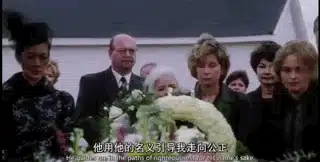
关注并回复：大鱼
获取电影资源
父亲节特别推荐：
《中央车站》| 介绍一下，这是最好的公路电影
父母的眼泪和爱，我们能感受到的不到十分之一
这里没有挑逗你眼目情欲的小鲜肉
也没有挑动你肉体情欲的段子
更没有膨胀你今生骄傲的鸡血
我们只在乎那些最质朴真诚的作品
在那里我们才能恢复真正的想象力
我们也坚信这才是我们真正需要的

ID:Six_hundred_hits
长按二维码，一键关注
【六百击】
-END-
电影评论
尽情分享朋友圈

苹果打赏
通道
小提示：文末广告是腾讯配送广告，内容与本号无关，但您的每次点击（无需反复点）都会给平台带来几毛收益，欢迎您点击支持六百击。